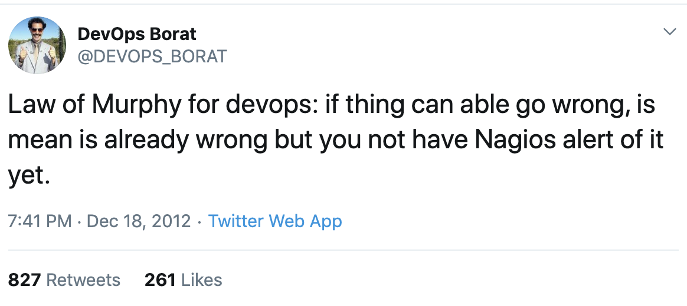

Rad thing about working in startup engineering teams is that you can wear several hats. Let us talk about the DevOps 🎩 today.
DevOps is a set of software development practices that combine software development (Dev) and information-technology operations (Ops) to shorten the systems-development life cycle while delivering features, fixes, and updates frequently in close alignment with business objectives. - Wikipedia
And that describes it pretty well, but what kind of tasks would you be doing and what kind of technologies and software would you use?
Now, this is going to be from my personal experience, yours might differ, but the basic principles should be there.
These are the tasks for a DevOps engineer:
Local development
Create a local development platform.
- Set up a local development environment in a Virtual machine (like Virtualbox with Vagrant).
- Set up Docker & Docker compose for developers to copy and run and develop their applications in.
- Set up a skeleton of one of the applications/frameworks that the Developers work with to develop in.
- Document the above setup and make it easy to get started, preferably with one, or a few commands.
- Pick a favorite shell (e.g., ZSH) and have scripts for all repetitive tasks and have aliases in your profile dotfile (e.g.
~/.zshrc).
CI
- Setup CI servers and deploy jobs to make it super easy to deploy, with as little hands-on for each deploy as possible, using tools like: Jenkins and CircleCI.
- Setup test servers that run tests when the CI deployjob runs at every commit or before a deployment for example.
- Setup security checks in CI deployjobs and scan Docker containers for vulnerabilities.
Infrastructure
Setup production & stage servers.
- Setup these servers using whatever kind of infrastructure your company uses, like: Kubernetes, OpenShift, and Amazon AWS (or Microsoft Azure, or GCP). Use tools such as Skaffold and AWS SAM.
- Use automatic tools that define your infrastructure as code or configuration files to set up your servers: Terraform, Ansible, Puppet.
- Configure the software needed for your applications to run like: Apache, Nginx, MySQL / MariaDB, Elasticsearch.
Logging and Monitoring
- Setup servers for aggregated Logging using something like ELK Stack.
- Setup monitoring for your infrastructure with tools like Prometheus and Grafana.
- Setup monitoring for your applications with tools like ElastAlert and Pingdom.
- Integrate everything with Slack.
Other
- Setup backups for files and databases in Cronjobs.
- Setup mailservers.
- Do regular security maintenance on all the infrastructure.
--
Once you have everything set, you can sit back and enjoy the view 😅.
